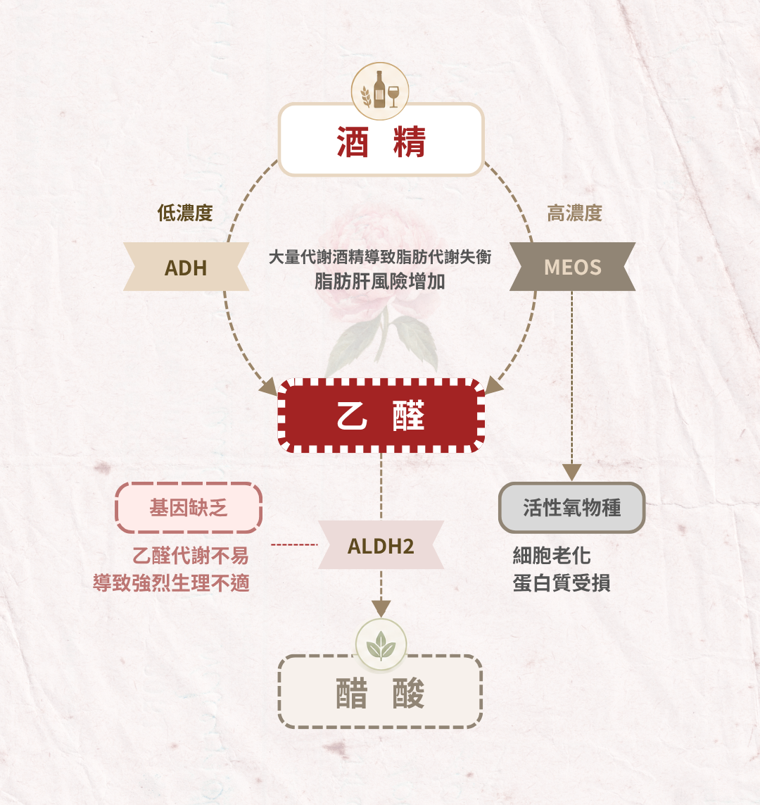

Blossom Agent · Pharmacokinetic Model
酒 精 計 算 機.
用藥物動力學（吸收／消除）代謝方程式，模擬飲酒後血中酒精濃度與乙醛的完整時間軸。此為估計工具，不是醫療建議——真正在意的，是妳能安心地喝、安全地回家。
≈9.5g
~22% ≈44g
≈10g
ADVICE · 節奏建議
喝得盡興，也替自己留餘地
Alcohol Metabolism · 酒精代謝路徑
一杯酒進入身體之後，走過哪些路
乙醇並不是直接消失，而是先被代謝成毒性更高的乙醛，再轉為乙酸排出。
中間那一段，決定了臉紅、宿醉，以及長期的致癌風險。

乙醇 · 生理危害
乙醇本身是中樞抑制劑——判斷與反應力下降、脫水、低血糖、刺激胃黏膜；長期過量傷肝、升高血壓。但真正的毒性，多半來自它的下一步產物。
乙醛 · 生理危害
乙醇的第一個代謝物，毒性遠高於乙醇。會與 DNA、蛋白質結合成「加合物」，引起臉紅、心悸、頭痛與噁心；IARC 列為第一級致癌物，累積提高食道癌、口腔癌風險。
ADH · 代謝路徑
主要途徑。乙醇脫氫酶（ADH）在肝細胞質把乙醇氧化成乙醛，同時把 NAD⁺ 還原為 NADH。速率大致固定，是「每小時代謝量」的來源；ADH 基因多型性造成個體差異。
MEOS · 代謝路徑
微粒體乙醇氧化系統（CYP2E1）。平時佔比低，長期大量飲酒會被誘導、比重上升，因此會感覺酒量變好；氧化乙醇的同時產生活性氧（ROS），造成氧化壓力與肝損傷。
Absorption · 酒種差異
為什麼同樣的酒精，吸收快慢不同
酒精量一樣，濃度、氣泡與食物，決定了它多快進到血液、峰值又有多高。
| 酒種 | 峰值 BAC | 到峰時間 |
|---|---|---|
| 伏特加通寧 20% (網站之混酒計算使用此參考) | 77.4 mg/dl | ≈36 分 |
| 白酒 12.5% | 61.7 mg/dl | ≈54 分 |
| 啤酒 5.1% | 50.3 mg/dl | ≈62 分 |
· 濃度：20/21 人吸收用通寧（18.75%）比純飲（37.5%）更快（p<0.001）
· 氣泡：14/21 人碳酸較快（平均吸收速率 4.39 vs 靜態 1.08 mg/100ml/min，p=0.006）
Method & Limits · 計算依據
這些數字，是怎麼算出來的
模型、參數與它的邊界——看清楚它能說什麼、又不能說什麼。
吸收：一階模型 dG/dt = −ka·G，ka 受進食狀態與酒種影響——酒種係數依 Mitchell et al. (2014) 的到峰時間，以及 Roberts and Robinson (2007) 的濃度與碳酸效應校準。首渡代謝以生體可用率 F 概略估。
消除：Michaelis–Menten dBAC/dt = −Vmax·BAC/(Km+BAC)，濃度高時趨近零階約 0.015%/hr（Jones, 2010）。
乙醛：乙醇經 ADH 氧化為乙醛（產生率＝乙醇氧化率），再經 ALDH2 以 Michaelis–Menten 清除。臉紅族的 ALDH2 Vmax 大幅下降，故乙醛累積。乙醛絕對濃度受個體、腸內菌、血中分布影響很大，此處數值為相對估計，重點在正常與缺乏者的曲線差異，而非精確 µM 值。
分布：BAC = 血中酒精 ÷ (r × 體重kg × 10)，r 男 0.68／女 0.55 隨年齡微修。一份純酒精 = 份量ml × 濃度 × 0.789（威士忌一份 30ml、混酒與啤酒一杯 250cc）。時間軸依「每次喝酒的間隔時間」把各份分散在不同時點下肚。
ALDH2 臉紅者：乙醛屬 IARC 一級致癌物（Brooks et al., 2009），飲酒罹癌風險顯著升高，故建議量大幅下修。
代謝路徑與致癌機轉：ADH／CYP2E1（MEOS）／ALDH2 三段氧化、ROS 與 DNA 加合物之關係，改編自 Seitz and Stickel (2007)。
重要：個體差異（藥物、肝功能、體質、吸收變異）很大，實際曲線可能明顯不同。此工具僅供教育參考，不能用來判斷可否駕車——台灣標準 BAC 0.03%，飲酒後一律不得駕車、騎車。
References · 參考文獻
- Brooks, P. J., Enoch, M.-A., Goldman, D., Li, T.-K., & Yokoyama, A. (2009). The alcohol flushing response: An unrecognized risk factor for esophageal cancer from alcohol consumption. PLoS Medicine, 6(3), e1000050. https://doi.org/10.1371/journal.pmed.1000050
- Jones, A. W. (2010). Evidence-based survey of the elimination rates of ethanol from blood with applications in forensic casework. Forensic Science International, 200(1–3), 1–20. https://doi.org/10.1016/j.forsciint.2010.02.021
- Mitchell, M. C., Jr., Teigen, E. L., & Ramchandani, V. A. (2014). Absorption and peak blood alcohol concentration after drinking beer, wine, or spirits. Alcoholism: Clinical and Experimental Research, 38(5), 1200–1204. https://doi.org/10.1111/acer.12355
- Roberts, C., & Robinson, S. P. (2007). Alcohol concentration and carbonation of drinks: The effect on blood alcohol levels. Journal of Forensic and Legal Medicine, 14(7), 398–405. https://doi.org/10.1016/j.jflm.2006.12.010
- Seitz, H. K., & Stickel, F. (2007). Molecular mechanisms of alcohol-mediated carcinogenesis. Nature Reviews Cancer, 7(8), 599–612. https://doi.org/10.1038/nrc2191